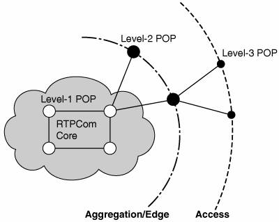
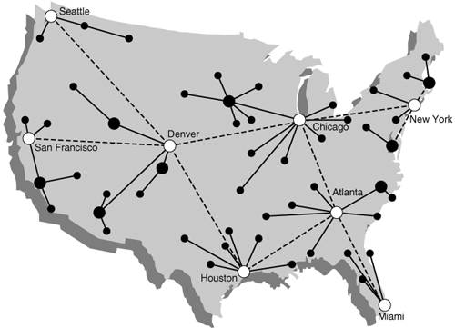
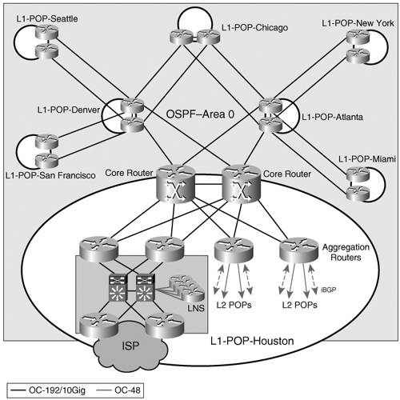
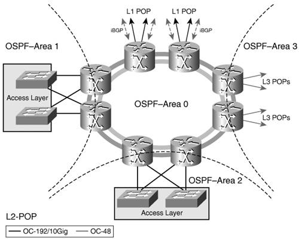
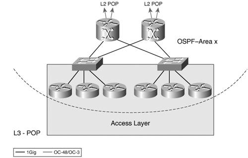
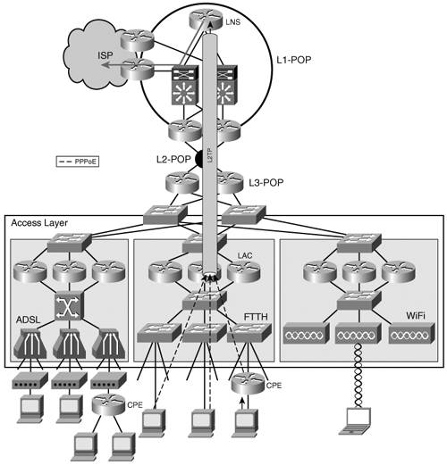

Network Environment and IPv4 ServicesRTPCom is a fictitious wholesale access provider that covers most major metropolitan areas in the United States. It started by providing access services to its residential and business customers over dialup and ISDN. Today, most of its customers are provided broadband access over xDSL, Fiber, or WiFi. RTPCom provides IPv4 unicast connectivity for its customers, linking them to their Internet service providers of choice. Considering the large number of residential customers, aggregation is important in RTPCom's network design. Its backbone is structured in three levels of points of presence (POPs) (Figure 14-1). Figure 14-1. RTPCom POP Architecture Level 1 (L1) POPs form the backbone of the network. They service large metropolitan areas and they provide the interface to various ISPs. Originally the L1 POPs were not interconnected and RTPCom's network was not contiguous. As its footprint and customer base grew, RTPCom could justify owning the OC-192 lines that currently connect its L1 POPs. The L1 POPs connect to L2 (L2) POPs over OC-192 or OC-48 links depending on the size of the L2 POP. The later provide access services in areas of the metropolitan domain serviced by the L1 POP or in other smaller cities. L2 POPs aggregate L3 (L3) POPs over OC-48 or OC-3 links. Figure 14-2 presents RTPCom's network in geographical context. Figure 14-2. RTPCom NetworkGeographical TopologyThe link and media types used to interconnect RTPCom's POPs are summarized in Table 14-1.
The design of each POP type is emphasizing the need for aggregation and redundancy. The differences revolve mainly around the levels of aggregation and the bandwidths of the links used. The L1 POPs form RTPCom's backbone with the following characteristics:
They also contain the L2TP Network Server (LNS) routers that terminate the PPP sessions initiated by the customers. The de-encapsulated traffic is then handed over to the ISP selected by those customers. Each LNS router supports the customers of a single ISP and it connects over dedicated VLANs to two edge routers that provide the uplink to that ISP. The L1 POP design and the backbone topology are shown in Figure 14-3. Authentication, authorization, and accounting (AAA) resources that are used by the LNS for managing the PPP sessions are maintained by the corresponding ISP and are not shown in this figure. Figure 14-3. Level 1 POP Design and Backbone Topology All routers in the L1 POPs belong to OSPF area 0. The L1 POPs peer via iBGP with the L2 POPs. A dedicated IGP is used between the LNS and the edge routers to implement layer 3 redundancy and load balancing. The edge routers connect to the collocated ISP routers which are not shown in the picture. Multiple L2 POPs are deployed within a metropolitan area to provide customer access. L2 POPs can also be used by themselves in smaller markets. They rely on OC-48 Dynamic Packet Transport (DPT) rings to aggregate the access layer across the covered area or L3 POPs. The same design would have applied to a Resilient Packet Ring (RPR, 802.17) infrastructure, too. Figure 14-4 presents the structure of an L2 POP. Figure 14-4. Level 2 POP DesignL2 POPs peer via interior Border Gateway Protocol (iBGP) with the L1 POPs. They run OSPF with the ring in area 0 and each aggregated location, a local access layer or L3 POPs, connecting to the ring in an area of its own as shown in Figure 14-4. The last building block in RTPCom's network design presented here is the L3 POP. It services small markets or remote locations. It is basically made of the access layer and an aggregation layer that provides connectivity to L2 POPs (Figure 14-5). Figure 14-5. Level 3 POP DesignL3 POPs connect to L2 POPs over OC-48 or OC-3 links. They run a single-area OSPF as an IGP. The access layer represented in the POP design figures is similar for both L2 and L3 POP types. Its main characteristic is scalability needed to handle a large number of customers (Figure 14-6). Figure 14-6. RTPCom Access LayerIn terms of physical and link layers, RTPCom owns the entire last-mile infrastructure for all access types it offers: ADSL, FTTH, and WiFi. Note RTPCom does not offer any services over cable. If it were to offer services, extending IPv6 access over such an infrastructure would complicate the deployment. As mentioned in Chapter 3, "Delivering IPv6 Unicast Services," the cable specification (DOCSIS) does not support IPv6, so tunneling is the only mechanism available for transporting the IPv6 traffic. RTPCom is currently evaluating WiMAX as an access technology but no service is yet provided as this would require a license subscription. For the IPv4 service, RTPCom aggregates the customer-initiated PPP over Ethernet (PPPoE) sessions and bundles them through Layer 2 Tunneling Protocol (L2TP) tunnels to the edge of its network. LNS routers in L1 POPs terminate the PPPoE sessions, de-encapsulate the traffic, and forward it to ISPs. The operation of this service is also exemplified in Figure 14-6. Through this wholesale model, RTPCom is not responsible for managing the global IPv4 addresses used by these customers, because they are managed by their ISP. RTPCom only provides transport for the encapsulated traffic and for that purpose it uses the private IPv4 address space. The bulk of RTPCom's business is providing residential customers with access to an ISP. It is also aggressively developing its small office/home office (SOHO) customer base. RTPCom would like to expand its service offering into the Triple Play (data, voice, video) arena. Although the wholesale model used for the IPv4 unicast-based services can easily support Voice over IP (VoIP), it does not support in a scalable manner content delivery (CD)-based on multicast. All RTPCom's customers have a virtual point-to-point link to their gateway (LNS) across a large portion of the network (L3, L2, and nearest L1 POP). Because the LNS is the only device that can do traffic replication for all the end users, RTPCom's network is flooded with multiple replicas of the same packets for each customer subscribed to a given content channel. This inefficient use of network resources limits significantly the scale of any multicast-based service. |